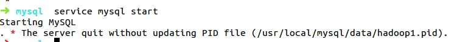
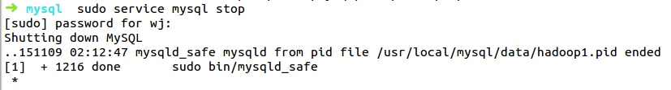
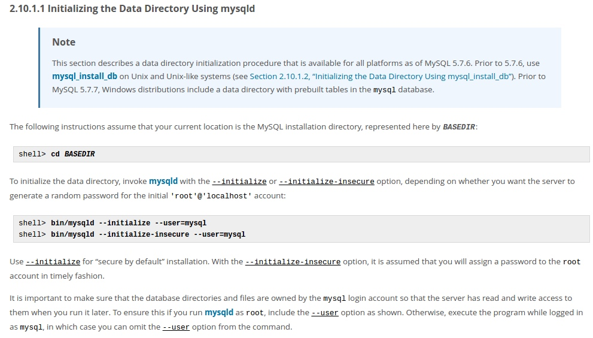
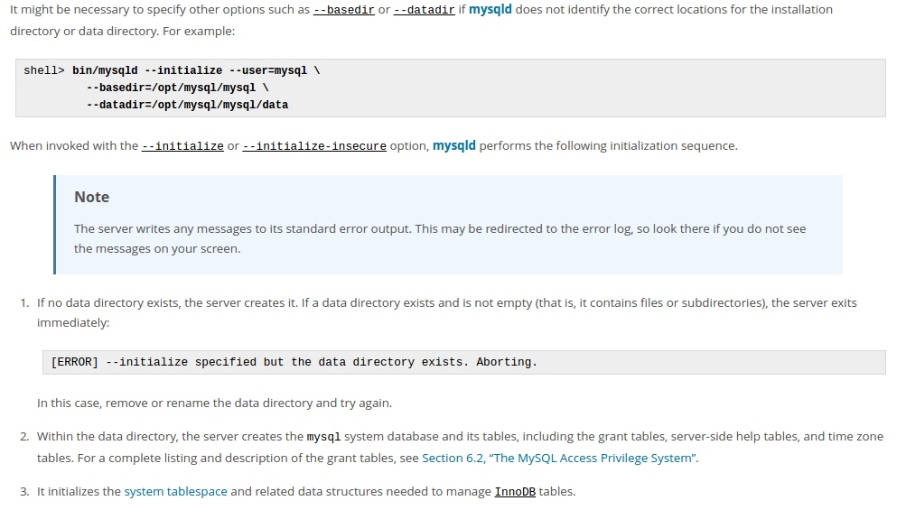
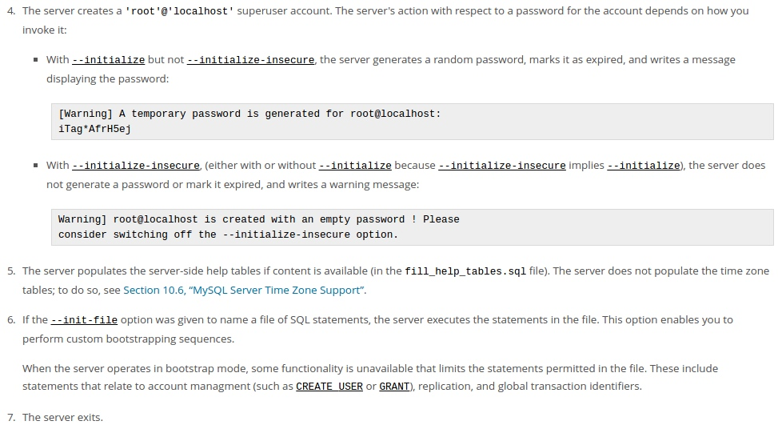
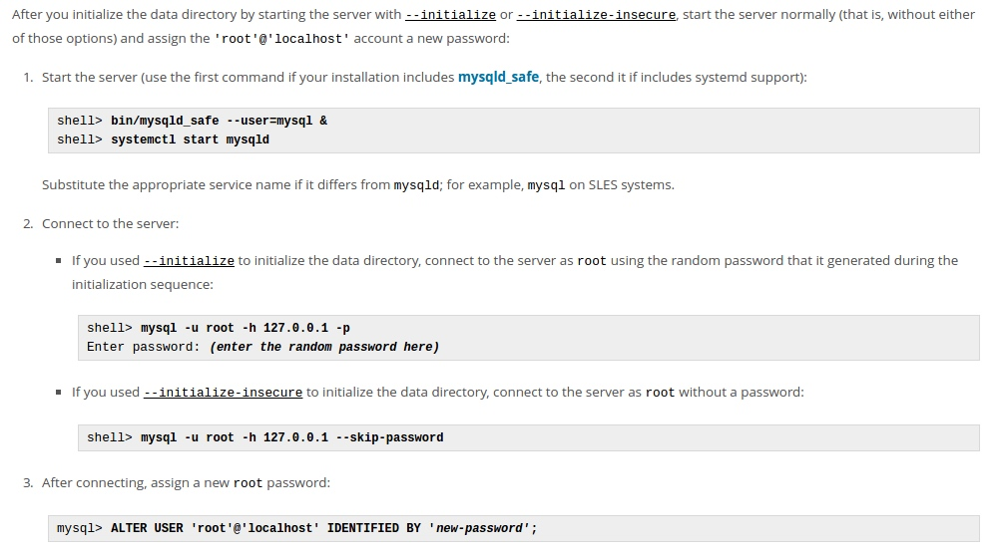

ubuntu mysql5.7源码安装
本系列的lnmp的大框架基本上是按照http://www.linuxzen.com/lnmphuan-jing-da-jian-wan-quan-shou-ce-si-lnmpda-jian-yuan-ma-an-zhuang.html来写的
最近在学习搭建LNMP环境，nginx相对来说还是比较好搭的，但是mysql就太坑爹了，之前在网上查资料的时候看到一个人说它花了一周的时间源码搭建mysql，刚开始内心还有点嘲笑他，但是此时此刻我发现是我错了，周日花了一天的时间使用源码安装了mysql，累感不爱。在ubuntu下mysql可以使用apt-get命令一步安装，仅做少许配置，但是源码安装真是掉了一层皮，但是源码安装又是一个运维必须要会的一个东西，所以必须学习。
1.下载mysql
这个是最基本的第一步，下载地址http://dev.mysql.com/downloads/mysql/，我选择了5.7版本的，这一版相对前几版在配置上变化较大，这也是在我之后搭建的过程中发现的，但是后悔已经来不及了。
2、下载相关依赖
sudo apt-get install cmake libncurses5-dev bison g++
这里要注意的是ubuntu下的libncurses5-dev在红帽下是另一个名字，这个请自行百度。
3.创建mysql用户、组
groupadd mysql useradd -r mysql -G mysql
4.解压mysql
我把下载好的mysql压缩包放在了/root目录下，因为之后要多次使用root权限，索性直接切换到root了。
tar -xzvf mysql-5.7.9.tar.gz && cd mysql-5.7.9.tar.gz
5.生成配置文件
在mysql5.7以前，使用configure生成配置文件，但是5.7是使用cmake生成的。这也就是为什么之前要安装cmake的原因。
在这里要注意的一点是需要事先安装好boost，如果没有，在cmake最后再加个参数-DDOWNLOAD_BOOST=1 -DWITH_BOOST=/usr/local/boost即可，系统会自动帮你下载解压安装boost
cmake -DCMAKE_INSTALL_PREFIX=/usr/local/mysql -DMYSQL_DATADIR=/usr/local/mysql/data -DDEFAULT_CHARSET=utf8 -DDEFAULT_COLLATION=utf8_general_ci -DMYSQL_TCP_PORT=3306 -DMYSQL_USER=mysql -DWITH_MYISAM_STORAGE_ENGINE=1 -DWITH_INNOBASE_STORAGE_ENGINE=1 -DWITH_ARCHIVE_STORAGE_ENGINE=1 -DWITH_BLACKHOLE_STORAGE_ENGINE=1 -DWITH_MEMORY_STORAGE_ENGINE=1 -DDOWNLOAD_BOOST=1 -DWITH_BOOST=/usr/local/boost make&&make install
参数含义：
-DCMAKE_INSTALL_PREFIX：指定MySQL程序的安装目录，默认/usr/local/mysql -DMYSQL_DATADIR：数据文件目录 -DDEFAULT_CHARSET：指定服务器默认编码，默认latin1 -DDEFAULT_COLLATION：指定服务器默认的整理编码，默认latin1_general_ci -DMYSQL_UNIX_ADDR：连接数据库socket文件路径，默认/tmp/mysql.sock -DENABLED_LOCAL_INFILE：指定是否允许本地执行LOAD DATA INFILE，默认OFF -DWITH_DEBUG bool值，表示是否开启debug模式 -DWITH_MYISAM_STORAGE_ENGINE= MYISAM引擎支持(1|0) -DWITH_INNOBASE_STORAGE_ENGINE= innoDB引擎支持(1|0) -DWITH_MEMORY_STORAGE_ENGINE= MEMORY引擎支持(1|0) -DWITHOUT_xxx_STORAGE_ENGINE：指定不编译的存储引擎 SYSCONFDIR：初始化参数文件目录 -DMYSQL_TCP_PORT：服务端口号，默认3306 -DWITH_COMMENT：指定编译备注信息
6.编译安装
mkdir -p /usr/local/mysql/data chown -R mysql:mysql /usr/local/mysql make&&make install
7.配置（这里的问题最多，出了很多问题，到现在只有这个勉强能用的方法）
①复制my.cnf配置文件
cp /usr/local/mysql/support-files/***.cnf /etc/my.cnf
②配置/etc/my.conf
[mysqld] basedir=/usr/local/mysql datadir=/usr/local/mysql/data log-error=/usr/local/mysql/mysql_error.log pid-file=/usr/local/mysql/mysql.pid #socket=/usr/local/mysql/mysql.sock user=mysql port=3306 explicit_defaults_for_timestamp=true [mysqld_safe] basedir=/usr/local/mysql datadir=/usr/local/mysql/data log-error=/usr/local/mysql/mysql_error.log pid-file=/usr/local/mysql/mysql.pid
③复制权限文件
cp /usr/local/mysql/support-files/mysql.server /etc/init.d/mysql
④初始化MySQL（这步完成后/usr/local/mysql/data目录下有数据了，本来是空的）
sudo bin/mysqld --initialize-insecure --user=mysql --basedir=/usr/local/mysql --datadir=/usr/local/mysql/data --pid-file=/usr/local/mysql/data/mysql.pid 生成无密码用户或sudo bin/mysqld --initialize --user=mysql --basedir=/usr/local/mysql --datadir=/usr/local/mysql/data --pid-file=/usr/local/mysql/data/mysql.pid生成随机密码用户
⑤启动MySQL（修改密码）
如果不先使用mysqld_safe直接启动mysql的话，就会报错

/usr/local/mysql/bin/mysqld_safe --user=mysql & service mysql start /usr/local/bin/mysql -u root -h 127.0.0.1 --skip-password（无密码） 或/usr/lcoal/bin/mysql -u root -h 127.0.0.1 -p （有密码） mysql> ALTER USER 'root'@'localhost' IDENTIFIED BY 'new-password'; （注意前面的mysql>是进入mysql的标志，不是命令） mysql> quit service mysql stop

可以看到退出mysql服务时是把mysqld_safe也关闭的
⑧启动mysql（登陆）
/usr/local/bin/mysqld_safe &
service mysql start
mysql -u root -p
从上面可以看出每次启动mysql时都要先启动mysqld_safe，在启动mysql，关闭mysql时会把mysqld_safe一起关掉，所以这就是我认为安装的不完美的地方，如果是终端apt-get安装的话从来没有发生过这种情况。看了mysql的官网在介绍安装的时候也是这么讲的也许是5.7版本就是这样操作的，连接：
http://dev.mysql.com/doc/refman/5.7/en/data-directory-initialization-mysqld.html
http://dev.mysql.com/doc/refman/5.7/en/data-directory-initialization-mysql-install-db.html



